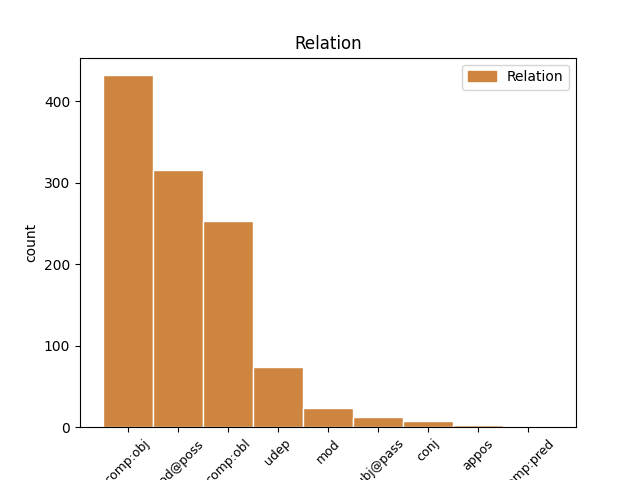
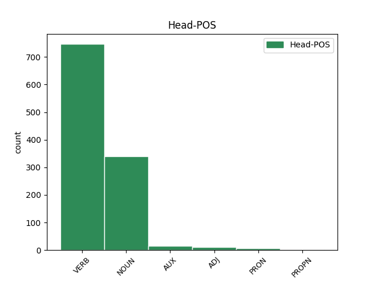
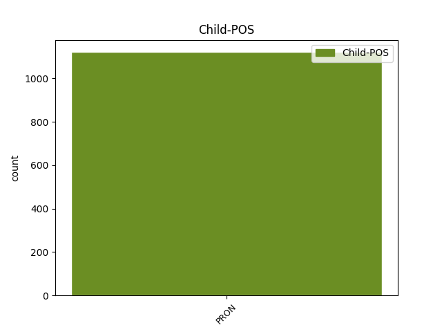

Distribution of features within this leaf



Agreement Rules sorted by frequency.
- When the dependent token is the direct object complements(comp:obj) of the head token, and the dependent token is PRON.
1 Żeby _ _ _ _ 0 _ _ _
2 ich on PRON ppron3:pl:acc:m1:ter:akc:npraep Case=Acc|Gender=Masc|Number=Plur|Person=3|PrepCase=Npr|PronType=Prs|SubGender=Masc1|Variant=Long 4 comp:obj _ _
3 piorun _ _ _ _ 0 _ _ _
4 trzasł trzasnąć VERB praet:sg:m3:perf Aspect=Perf|Gender=Masc|Mood=Ind|Number=Sing|SubGender=Masc3|Tense=Past|VerbForm=Fin|Voice=Act 0 _ _ _
5 ! _ _ _ _ 0 _ _ _
6 " _ _ _ _ 0 _ _ _
7 . _ _ _ _ 0 _ _ _
1 Łzy _ _ _ _ 0 _ _ _
2 płynęły _ _ _ _ 0 _ _ _
3 teraz _ _ _ _ 0 _ _ _
4 po _ _ _ _ 0 _ _ _
5 jej on PRON ppron3:sg:gen:f:ter:akc:npraep Case=Gen|Gender=Fem|Number=Sing|Person=3|PrepCase=Npr|PronType=Prs|Variant=Long 7 mod@poss _ _
6 brzydkiej _ _ _ _ 0 _ _ _
7 twarzy twarz NOUN subst:sg:loc:f Case=Loc|Gender=Fem|Number=Sing 0 _ _ _
8 , _ _ _ _ 0 _ _ _
9 a _ _ _ _ 0 _ _ _
10 ona _ _ _ _ 0 _ _ _
11 wycierała _ _ _ _ 0 _ _ _
12 je _ _ _ _ 0 _ _ _
13 ręką _ _ _ _ 0 _ _ _
14 . _ _ _ _ 0 _ _ _
1 Znów _ _ _ _ 0 _ _ _
2 pomógł pomóc VERB praet:sg:m1:perf:nagl Agglutination=Nagl|Aspect=Perf|Gender=Masc|Mood=Ind|Number=Sing|SubGender=Masc1|Tense=Past|VerbForm=Fin|Voice=Act 0 _ _ _
3 mu on PRON ppron3:sg:dat:m1:ter:nakc:npraep Case=Dat|Gender=Masc|Number=Sing|Person=3|PrepCase=Npr|PronType=Prs|SubGender=Masc1|Variant=Short 2 comp:obl _ _
4 aspirant _ _ _ _ 0 _ _ _
5 . _ _ _ _ 0 _ _ _
1 Świat _ _ _ _ 0 _ _ _
2 go on PRON ppron3:sg:gen:m1:ter:nakc:npraep Case=Gen|Gender=Masc|Number=Sing|Person=3|PrepCase=Npr|PronType=Prs|SubGender=Masc1|Variant=Short 5 udep _ _
3 wtedy _ _ _ _ 0 _ _ _
4 nie _ _ _ _ 0 _ _ _
5 obchodził obchodzić VERB praet:sg:m3:imperf Aspect=Imp|Gender=Masc|Mood=Ind|Number=Sing|SubGender=Masc3|Tense=Past|VerbForm=Fin|Voice=Act 0 _ _ _
6 . _ _ _ _ 0 _ _ _
1 Zostały zostać AUX praet:pl:f:perf Aspect=Perf|Gender=Fem|Mood=Ind|Number=Plur|Tense=Past|VerbForm=Fin|Voice=Act 0 _ _ _
2 one on PRON ppron3:pl:nom:f:ter:akc:npraep Case=Nom|Gender=Fem|Number=Plur|Person=3|PrepCase=Npr|PronType=Prs|Variant=Long 1 subj@pass _ _
3 przewiezione _ _ _ _ 0 _ _ _
4 do _ _ _ _ 0 _ _ _
5 szpitala _ _ _ _ 0 _ _ _
6 . _ _ _ _ 0 _ _ _
1 - _ _ _ _ 0 _ _ _
2 Zapewne _ _ _ _ 0 _ _ _
3 miał _ _ _ _ 0 _ _ _
4 by _ _ _ _ 0 _ _ _
5 m _ _ _ _ 0 _ _ _
6 i _ _ _ _ 0 _ _ _
7 to to PRON subst:sg:acc:n Case=Acc|Gender=Neut|Number=Sing|PronType=Dem 0 _ _ _
8 , _ _ _ _ 0 _ _ _
9 i _ _ _ _ 0 _ _ _
10 to to PRON subst:sg:acc:n Case=Acc|Gender=Neut|Number=Sing|PronType=Dem 7 conj _ SpaceAfter=No
11 , _ _ _ _ 0 _ _ _
12 gdyż _ _ _ _ 0 _ _ _
13 oba _ _ _ _ 0 _ _ _
14 rozwiązania _ _ _ _ 0 _ _ _
15 mieszczą _ _ _ _ 0 _ _ _
16 się _ _ _ _ 0 _ _ _
17 w _ _ _ _ 0 _ _ _
18 programie _ _ _ _ 0 _ _ _
19 i _ _ _ _ 0 _ _ _
20 w _ _ _ _ 0 _ _ _
21 myśleniu _ _ _ _ 0 _ _ _
22 mojego _ _ _ _ 0 _ _ _
23 zaplecza _ _ _ _ 0 _ _ _
24 politycznego _ _ _ _ 0 _ _ _
25 . _ _ _ _ 0 _ _ _
1 To to PRON subst:sg:nom:n Case=Nom|Gender=Neut|Number=Sing|PronType=Dem 0 _ _ _
2 to to PRON subst:sg:nom:n Case=Nom|Gender=Neut|Number=Sing|PronType=Dem 1 appos _ _
3 było _ _ _ _ 0 _ _ _
4 z _ _ _ _ 0 _ _ _
5 życia _ _ _ _ 0 _ _ _
6 wzięte _ _ _ _ 0 _ _ _
7 ? _ _ _ _ 0 _ _ _
1 Od _ _ _ _ 0 _ _ _
2 poniedziałku _ _ _ _ 0 _ _ _
3 toczyły _ _ _ _ 0 _ _ _
4 się _ _ _ _ 0 _ _ _
5 walki _ _ _ _ 0 _ _ _
6 o _ _ _ _ 0 _ _ _
7 jego on PRON ppron3:sg:gen:n:ter:akc:npraep Case=Gen|Gender=Neut|Number=Sing|Person=3|PrepCase=Npr|PronType=Prs|Variant=Long 8 mod _ _
8 odbicie odbić NOUN ger:sg:acc:n:perf:aff Aspect=Perf|Case=Acc|Gender=Neut|Number=Sing|Polarity=Pos|VerbForm=Vnoun 0 _ _ _
9 . _ _ _ _ 0 _ _ _
1 Ale _ _ _ _ 0 _ _ _
2 wszak _ _ _ _ 0 _ _ _
3 nie _ _ _ _ 0 _ _ _
4 dla _ _ _ _ 0 _ _ _
5 mnie _ _ _ _ 0 _ _ _
6 nim on PRON ppron3:sg:inst:m1:ter:akc:npraep Case=Ins|Gender=Masc|Number=Sing|Person=3|PrepCase=Npr|PronType=Prs|SubGender=Masc1|Variant=Long 7 comp:pred _ _
7 był być AUX praet:sg:m1:imperf Aspect=Imp|Gender=Masc|Mood=Ind|Number=Sing|SubGender=Masc1|Tense=Past|VerbForm=Fin|Voice=Act 0 _ _ _
8 eś _ _ _ _ 0 _ _ _
9 . _ _ _ _ 0 _ _ _
Disagree Examples:
1 19-letnia _ _ _ _ 0 _ _ _
2 mieszkanka _ _ _ _ 0 _ _ _
3 Koszalina _ _ _ _ 0 _ _ _
4 przekonała _ _ _ _ 0 _ _ _
5 kolegów _ _ _ _ 0 _ _ _
6 , _ _ _ _ 0 _ _ _
7 aby _ _ _ _ 0 _ _ _
8 pomogli pomóc VERB praet:pl:m1:perf Aspect=Perf|Gender=Masc|Mood=Ind|Number=Plur|SubGender=Masc1|Tense=Past|VerbForm=Fin|Voice=Act 0 _ _ _
9 jej on PRON ppron3:sg:dat:f:ter:akc:npraep Case=Dat|Gender=Fem|Number=Sing|Person=3|PrepCase=Npr|PronType=Prs|Variant=Long 8 comp:obl _ _
10 oszukać _ _ _ _ 0 _ _ _
11 bank _ _ _ _ 0 _ _ _
12 . _ _ _ _ 0 _ _ _
1 6 _ _ _ _ 0 _ _ _
2 lat _ _ _ _ 0 _ _ _
3 temu _ _ _ _ 0 _ _ _
4 jej on PRON ppron3:sg:gen:f:ter:akc:npraep Case=Gen|Gender=Fem|Number=Sing|Person=3|PrepCase=Npr|PronType=Prs|Variant=Long 5 mod@poss _ _
5 dziecko dziecko NOUN subst:sg:acc:n Case=Acc|Gender=Neut|Number=Sing 0 _ _ _
6 zamordowano _ _ _ _ 0 _ _ _
7 . _ _ _ _ 0 _ _ _
1 A _ _ _ _ 0 _ _ _
2 co _ _ _ _ 0 _ _ _
3 ma _ _ _ _ 0 _ _ _
4 być _ _ _ _ 0 _ _ _
5 jej on PRON ppron3:sg:gen:f:ter:akc:npraep Case=Gen|Gender=Fem|Number=Sing|Person=3|PrepCase=Npr|PronType=Prs|Variant=Long 6 mod@poss _ _
6 spoiwem spoiwo NOUN subst:sg:inst:n Case=Ins|Gender=Neut|Number=Sing 0 _ _ _
7 i _ _ _ _ 0 _ _ _
8 siłą _ _ _ _ 0 _ _ _
9 napędową _ _ _ _ 0 _ _ _
10 ? _ _ _ _ 0 _ _ _
1 A _ _ _ _ 0 _ _ _
2 co co PRON subst:sg:acc:n Case=Acc|Gender=Neut|Number=Sing|PronType=Int 5 comp:obj _ _
3 w _ _ _ _ 0 _ _ _
4 sercu _ _ _ _ 0 _ _ _
5 nosił nosić VERB praet:sg:m1:imperf Aspect=Imp|Gender=Masc|Mood=Ind|Number=Sing|SubGender=Masc1|Tense=Past|VerbForm=Fin|Voice=Act 0 _ _ _
6 ten _ _ _ _ 0 _ _ _
7 pan _ _ _ _ 0 _ _ _
8 możny _ _ _ _ 0 _ _ _
9 ? _ _ _ _ 0 _ _ _
10 . _ _ _ _ 0 _ _ _
11 . _ _ _ _ 0 _ _ _
12 . _ _ _ _ 0 _ _ _
1 – _ _ _ _ 0 _ _ _
2 a _ _ _ _ 0 _ _ _
3 dźwigała dźwigać VERB praet:sg:f:imperf Aspect=Imp|Gender=Fem|Mood=Ind|Number=Sing|Tense=Past|VerbForm=Fin|Voice=Act 0 _ _ _
4 ś _ _ _ _ 0 _ _ _
5 coś coś PRON subst:sg:acc:n Case=Acc|Gender=Neut|Number=Sing|PronType=Ind 3 comp:obj _ SpaceAfter=No
6 ? _ _ _ _ 0 _ _ _